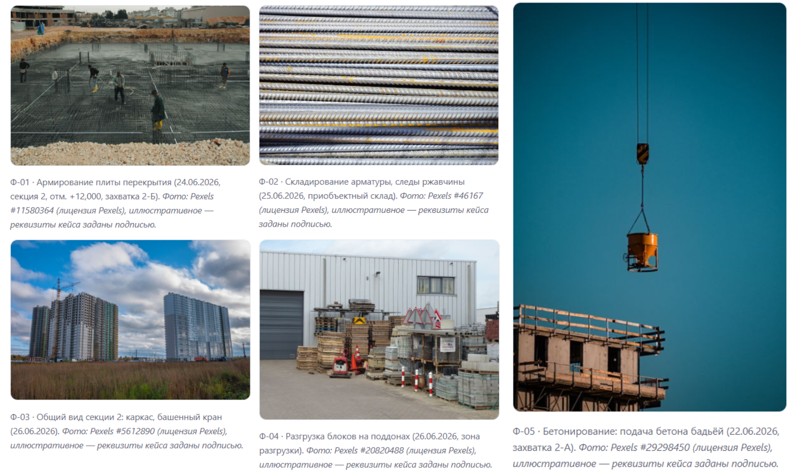
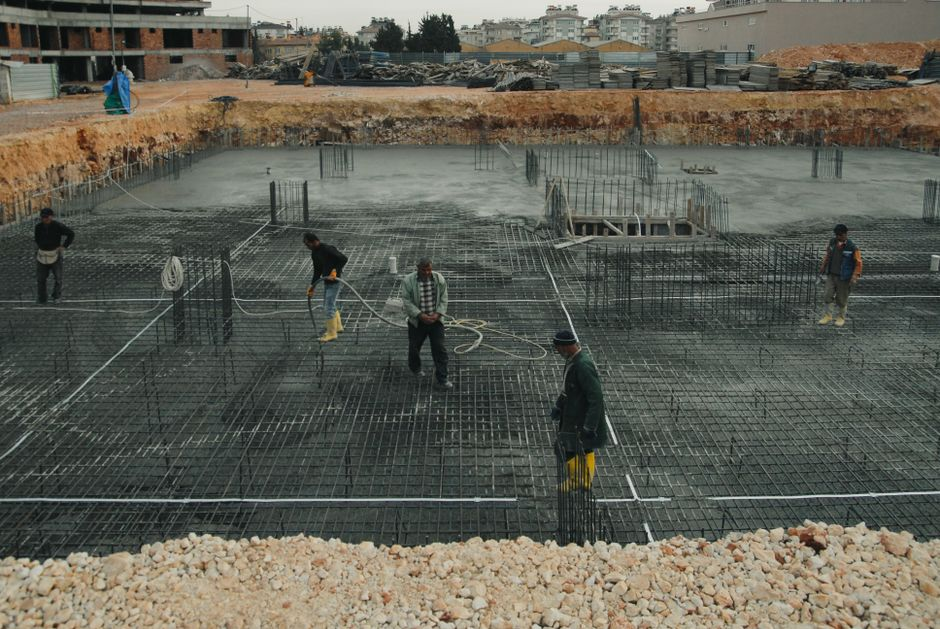
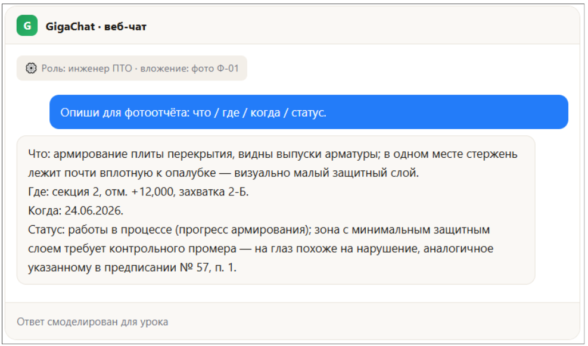
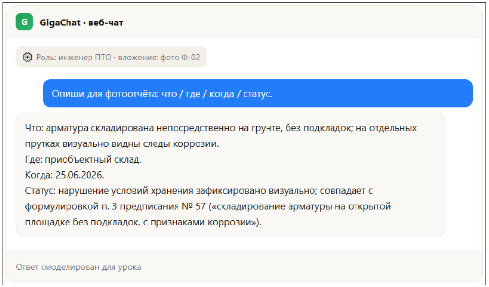
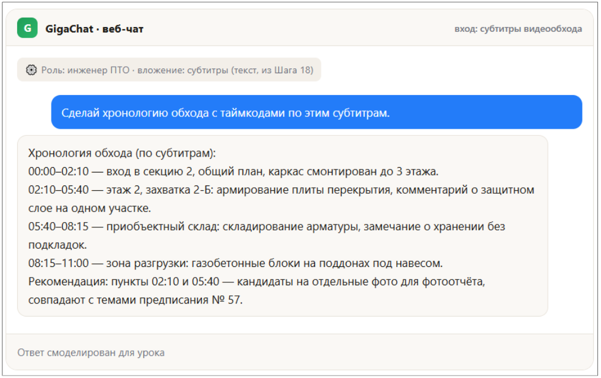

Фото и видео с объекта


После обхода — 40 фото в галерее и час на подписи к фотоотчёту: что, где, когда и в каком статусе. ИИ описывает снимок за секунды — но заключение о дефекте всегда делает инженер, а не модель.
40 фото после обхода — и час на подписи
Обошли объект, отсняли 40 кадров — армирование, склад, общий вид секции. Дальше начинается рутина: к каждому фото нужна подпись для отчёта заказчику — что на снимке, где, когда, в каком статусе. Вручную это час монотонной работы, часто в конце смены, когда внимание уже не то.
ИИ смотрит на фото и за секунды описывает, что видит: объект, ракурс, детали. Дальше вы решаете, что с этим описанием делать — оформить как строку фотоотчёта или как основание для предписания.
💡 Зачем это вам: чем быстрее готов фотоотчёт, тем быстрее фиксируется прогресс и нарушения — а час, освободившийся от подписей, идёт на реальный обход, а не на клавиатуру.
Что важно помнить:
- ИИ описывает то, что видно на фото — не додумывает то, что за кадром (соседние захватки, историю нарушения).
- Описание — это черновик подписи, а не акт: даты, номера захваток и ссылки на нормативы проверяет человек.
- Фотографии стройки — не только рабочий материал, но и потенциальные персональные данные: лица людей и номера машин требуют особого обращения (см. часть А).
Часть А: Приложи фото в чат — получи подпись для отчёта
Сценарий простой: прикладываете фото в чат-бот и просите описать его для фотоотчёта по формуле «что / где / когда / статус».
К описаниям Ф-01…Ф-05 приложены реальные учебные фото (Pexels, файлы Фото_Ф-XX.jpg в этом архиве). Дату и захватку ИИ берёт из подписи — сам снимок таких данных не содержит.

Ниже — два демо-фото: («Описания фото с объекта»): Ф-01 показывает прогресс, Ф-02 — дефект, который свяжем с предписанием № 57.
Пример 1. Армирование плиты перекрытия

Ты — инженер ПТО. Контекст: описания фото с объекта (армирование, складирование арматуры). Задача: сформулируй пункты фотоотчёта и свяжи их с предписанием № 57. Формат: список «фото → что зафиксировано → пункт предписания». Описания фото: [вставьте]

🔗 ИИ фиксирует «похоже на» — не «является». Финальный промер защитного слоя и вывод о нарушении — за инженером стройконтроля.
Пример 2. Складирование арматуры

Дефект на Ф-02 — это тот же факт, что и п. 3 предписания № 57 (см. Шаг 10): одно нарушение, зафиксированное дважды — документом стройконтроля и фото с обхода. В отчёте это стоит указать одной строкой, а не как два разных события.
Этика съемки на объекте
- Лица людей на фото — не публикуем в отчётах без согласия человека; при необходимости показать процесс — кадрируйте так, чтобы лицо не попадало в кадр, или размывайте вручную перед отправкой.
- Номера машин — замазывайте перед публикацией и загрузкой в чат-бот, даже во внутренней переписке.
📷 Рабочее фото не запрещено автоматически. Проверьте: люди, номера, документы и экраны в кадре, закрытые элементы объекта, геометки/метаданные. Если чувствительное нельзя убрать — учебное фото или корпоративный контур.
Правило честности: ИИ описывает — эксперт заключает
В обоих демо-ответах модель говорит «похоже на», «визуально», «совпадает с формулировкой» — и ни разу не пишет «это дефект» или «это нарушение». Это не случайность формулировки, а красная линия курса.
ИИ не классифицирует дефекты как эксперт. Модель не была на объекте, не видела фото в высоком разрешении, не имеет допуска и квалификации инженера строительного контроля. Она распознаёт то, что визуально похоже на проблему, и формулирует это как наблюдение — окончательное заключение о характере и причине дефекта делает инженер, с промером, актом и подписью.
- Используйте описание ИИ как черновик наблюдения — повод присмотреться, а не готовый вывод для акта.
- Если ИИ пишет «похоже на нарушение» — это сигнал перепроверить на месте, а не факт для документа.
- В официальных документах (предписаниях, актах) фиксируйте только то, что подтвердил человек с измерением или визуальным освидетельствованием.
Часть Б: Выжимка видеообхода
Кроме фото после обхода часто остаётся видео — 10–15 минут прохода по этажам с закадровыми комментариями. Смотреть его целиком, чтобы найти нужный момент, долго.
Честно о текущих ограничениях (RU-сценарий): прямая загрузка видеофайла в GigaChat или YandexGPT/Алису пока ограничена — модели этих сервисов на момент записи курса не принимают видео как вложение так же свободно, как фото или текст. Не обещаем того, чего инструмент не умеет.
Рабочий путь без прямой загрузки видео:
- Голосовая дорожка → текст. Извлеките звук видеообхода и расшифруйте его в текст — тем же способом, что и на Шаге 18 (диктовка через SpeechKit/SaluteSpeech).
- Текст → выжимка. Дальше это обычная суммаризация длинного текста с таймкодами — работает как любой текстовый промпт.
- Альтернатива — раскадровка. Если расшифровки нет, сделайте несколько скриншотов ключевых моментов видео и опишите их по отдельности, как фото в части А.
